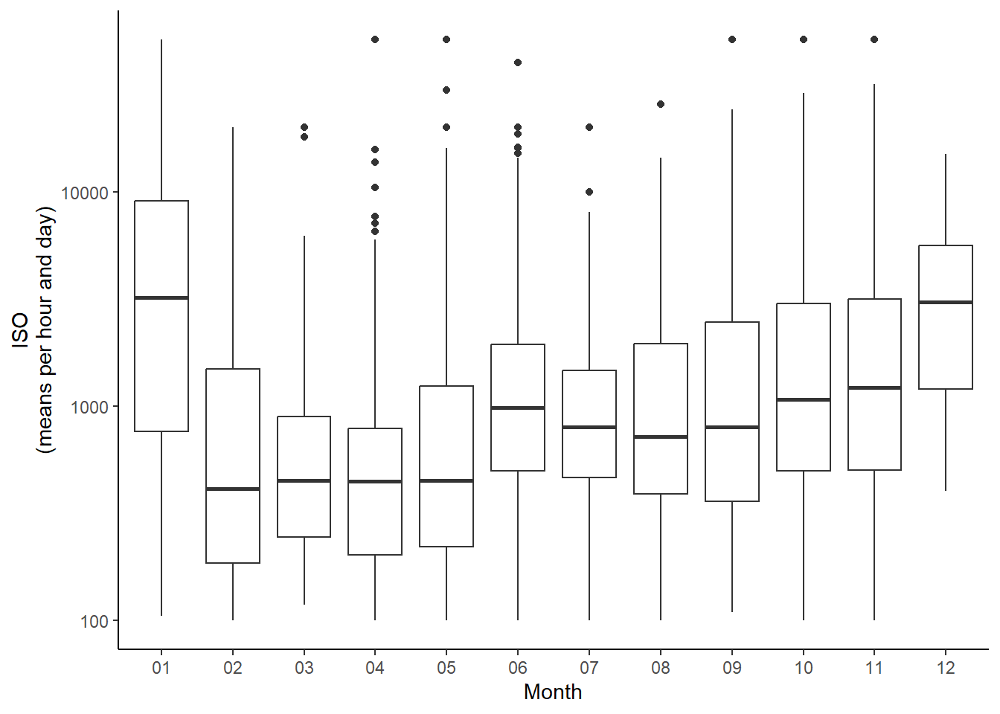

1 Om skådartrycket på uddarna
Vi har länge pratat om skillnaden i antalet skådare på Ölands södra och norra udde.
Ottenby har en lång tradition av fågelskådande och ringmärkning bakom sig. Förutom att det är en glödhet lokal, så hittas ofta fler fåglar när många ögon och öron samlas på samma plats. Det betyder att när någon annan skådare hittar en ovanlig fågel så är det inget stort företag att åka och titta på den. Det finns alltså spelteoretiska fördelar att skåda där det finns många skådare. “Vart ska jag vara för att få se roliga saker? Där andra är, så klart.”
Skådartraditionen på norra udden är inte lika lång och inte lika cementerad i folkliga skådarsjälan som på södra. Följaktligen är det inte lika många som skådar där. Det finns heller ingen ringmärkning som kan förgylla dagen. Det kan därför bli väldigt långt till närmsta raritet, som med störst sannolikhet hittas där det är mycket folk, det vill säga i söder. Till råga på allt tar det, från bron, nästan en och en halv gånger (45%) längre tid att åka till norra udden än södra udden (1 timme och 26 minuter, jämfört med 59 minuter). På norra är man därför utlämnad att gräva sitt eget guld om det ska bli något guld alls. Ändå finns numera ett begränsat gäng skådare som gärna, eller kanske hellre, skådar på norra udden.
Med anledning av den framgångsrika skörd på norra udden de senaste fem åren kan man ställa sig frågan hur mycket skådartrycket egentligen skiljer sig mellan uddarna. Den här sidan är ägnad till just det ämnet.

1.1 Data
I materialet ingår data från och med 2015 till och med 2023. Data består av antalet unika observatörer (inklusive medobservatörer) per dag.
Vi definierar en skådardag ett besök av en skådare på en av lokalerna, oavsett hur kort. Dvs., om en skådare rapporterat gräsand på Ölands södra udde med två medobservatörer bidrar den rapporten alltså med “tre skådardagar” till ÖSU:s räkning den dagen. Om samma gäng stannar kvar till nästa dag och rapporterar allt de ser den dagen, har det gänget hittills bidragit med sex skådardagar. Det skiljer alltså inte mellan en flitig rapportör som rapporterar fullständiga checklistor med 60-100 arter, och en som endast rapporterar den lite extra roliga arten; här är det besökstryck av unika skådare för varje given dag som räknas.
Följande analyser består av data från över en miljon rapporter.
1.2 Besökstryck
Mellan 2015 och 2023 har 1599 unika skådare (baserad på unika namn; finns flera personer med samma namn så räknas de som en) rapporterat på norra udden, medan 4019 unika skådare har rapporterat på södra udden. Det är alltså ungefär 2.5 gånger fler unika besökare som rapporterat eller varit medobservatörer på södra udden jämfört med den norra.
Om man istället tittar på antalet skådardagar så blir det större skillnad: ÖNU har samlat på sig 8320 skådardagar mellan 2015 och 2023, medan ÖSU har samlat på sig ungefär en tiopotens fler, nämligen 83569 skådardagar. Eftersom skådartrycket varierar över säsongen kan kan testa att visualisera på det här sättet (Fig 1).

Figur 1. Skådartryck över säsongen på vardera udde. Varje tunn linje representerar “antalet unika skådare per dag” för varje enskilt år mellan 2015 och 2023, och den tjocka linjen följer medianen-antalet skådare per dag.
Det första man slås av är den stora skillnaden i besökstryck på de olika uddarna.
Vidare kan man se att ÖNU har några rejält höga avvikande pikar under hösten. Det är linjen för 2023: den höga piken en tredjedel in i oktober indikerar tillresta skådare på den beigekindade skogstrasten, påföljande pik tillresta skådare på rostsångaren, och de två sista pikarna representerar de båda helgerna då stillahavslommen kunde skådas av tillresta.
De enskilda linjerna är alltså väldigt känsliga för enskilda drag och händelser. Medianen visar därför ett mer representativt värde på besökartrycket, då lika många värden ligger över som under linjen. Om man studerar Ölands norra uddes medianlinje ser man till exempel att maj, plus minus några dagar, är den enda perioden med någorlunda konsekvent täckning. Under övrig tid på året är det vanligare med inga, eller i bästa fall enstaka, skådare.
I Fig 1 gäller det alla unika “skådardagar”, även sådana som nödvändigtvis inte bidrar till något faktiskt skådartryck. En vidare frågeställning skulle kunna vara att kolla på hur dessa linjer ser ut om man bara inkluderar skådare som frekventerar vardera lokal. Här kan man spekulera i hur ofta man måste besöka en lokal för att vara en sådan skådare. Man kan börja med att sätta gränsen på 10 skådardagar. Vi har nio år i datamaterialet, vilket innebär att man bör ha gjort i snitt ett besök om året för att räknas som frekvent besökare. Visst är det några rena dragare som också i snitt har gjort 10 eller fler besök på vardera lokal utan att bidra till primärskådningen, men den stora bulken av långresande kryssare lär gå bort i detta urval.
1.2.2 Relativt tryck
Om man delar antalet skådar dagar på norra udden med skådardagar på södra udden kan man få ut en “relativ bevakning”.
Figur 2. Den relativa bevakningen på vardera udde utslaget per säsong. För att anknyta till Fig 1 så är det ÖNUs tjocka medianlinje som är delad med ÖSUs tjocka medianlinje.
1.3 Topprapportörerna
En påminnelse om att detta fortfarande gäller data från och med 2015 till och med 2023.
Tabell 1. Topprapportörerna för norra udden.
| Namn | Skådardagar |
|---|---|
| Kerstin Svensson | 844 |
| Tobias Berger | 274 |
| Björn Karlsson | 247 |
| Markus Tallroth | 188 |
| Hasse Olsson | 177 |
| Robin Isaksson | 148 |
| Magnus Elfwing | 146 |
| Stefan Svensson | 138 |
| Carl Tamario | 131 |
| Ragnar Gustafsson | 110 |
Tabell 2. Topprapportörerna för södra udden.
| Namn | Skådardagar |
|---|---|
| Douglas Gustafsson | 2248 |
| Bosse Carlsson | 1635 |
| Urban Toresson | 1084 |
| Ingvar Torsson | 987 |
| Leif Dahlgren | 960 |
| Göran Andersson | 936 |
| Ronnie Nederfeldt | 841 |
| Anders Carlberg | 770 |
| Bertil Breife | 761 |
| Lena Carlberg | 746 |